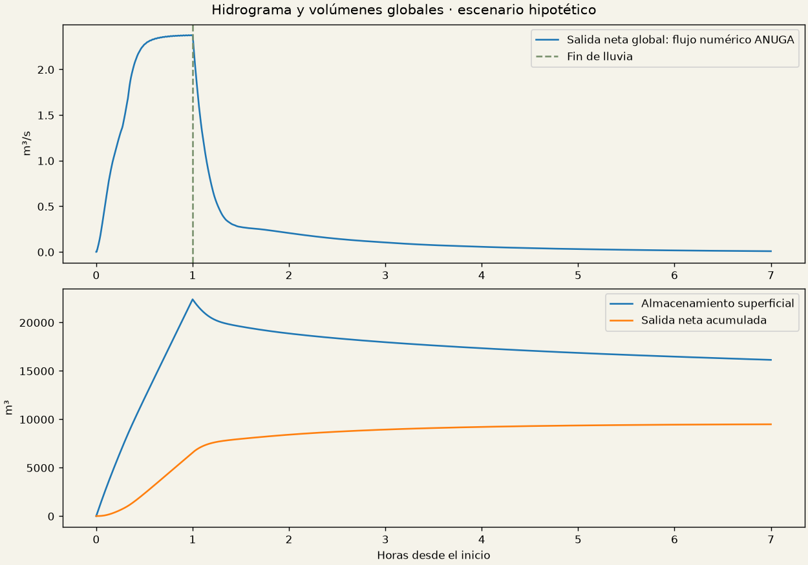
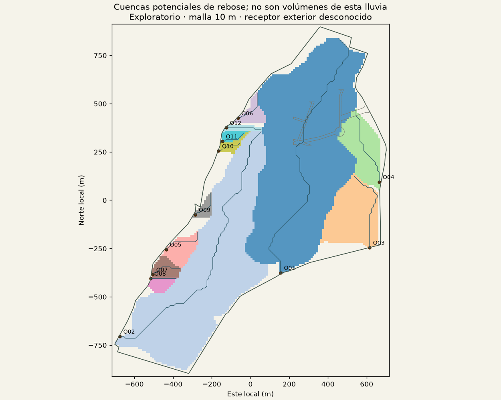
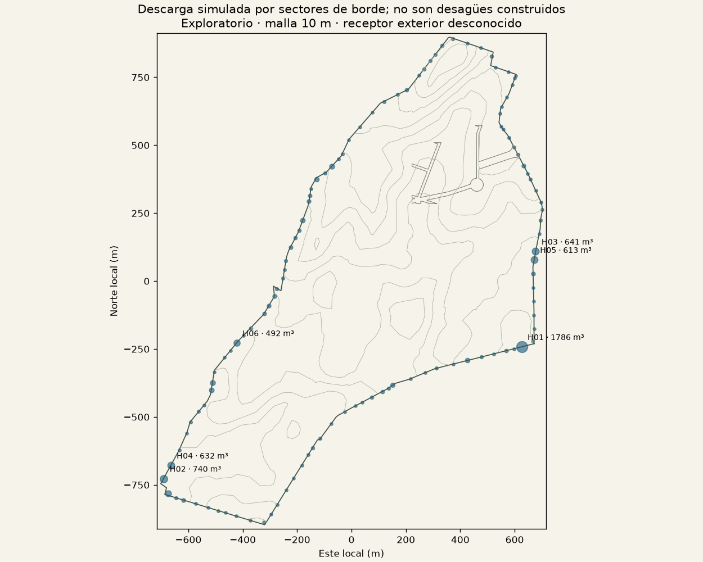
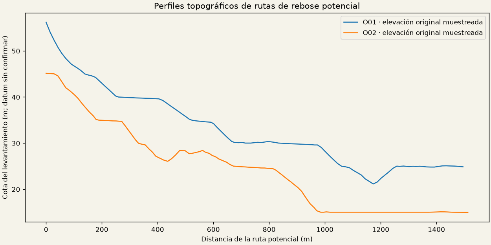
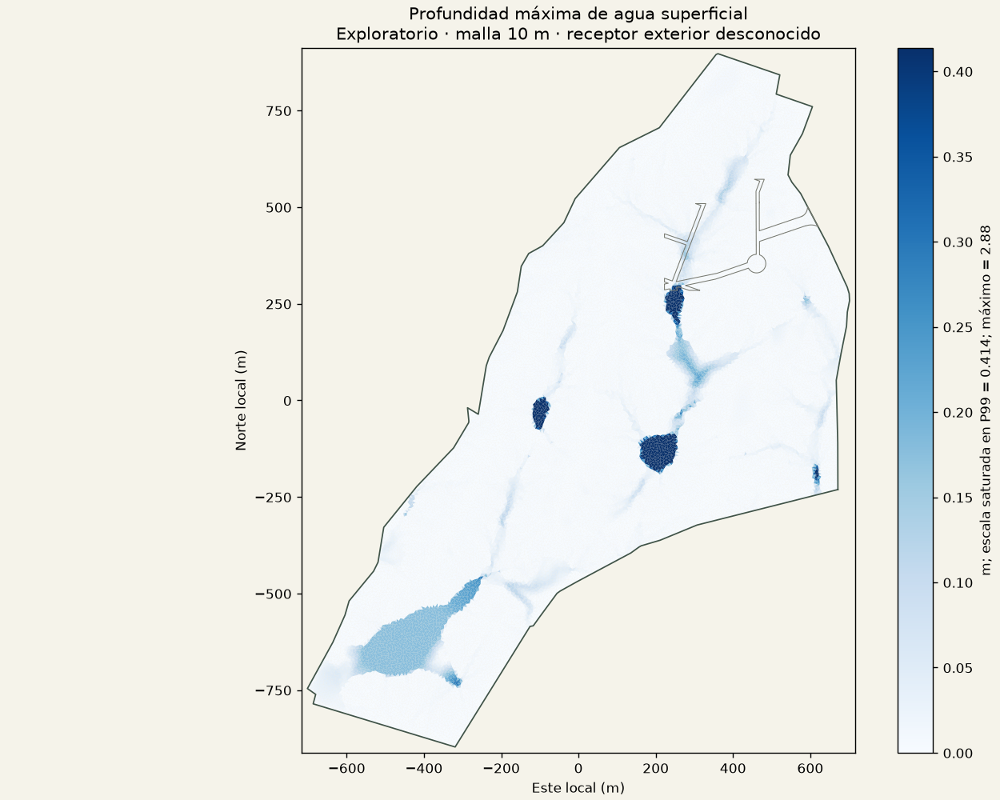
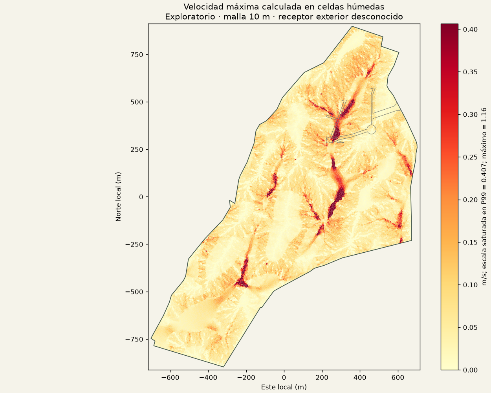
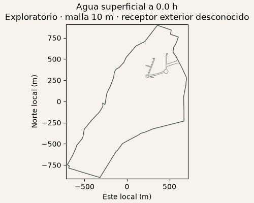

Un escenario exploratorio simplificado, autorizado por la limitación de espacio. El receptor final fuera del predio no está identificado. No se ejecutaron las 64 simulaciones. Esta página conserva la referencia de 10 m; consulta el análisis afinado y su verificación de estabilidad.
30 mm/h constantes durante 60 minutos; infiltración hipotética 5 mm/h. Terreno topográfico original, sin obras de drenaje inventadas. ANUGA 4.0.1 en CPU, 35,912 celdas de unos 10 m, más seis horas de drenaje posterior.
Lluvia: 34,731.6 m³. Infiltración: 9,122.0 m³. Salida neta global: 9,478.0 m³. Agua restante: 16,131.6 m³. Error de balance: 0.000000 %.

Las cuencas de rebose potencial se obtienen con relleno virtual únicamente para trazar rutas. Las depresiones se conservan en la simulación. O01 y O02 son candidatos topográficos; H identifica agrupaciones de descarga de la simulación. No confundir los dos.


Estas filas son sectores del borde agrupados en cuadrículas de 50 m, no desagües construidos. Las siguientes atribuciones por sectores son estimaciones del mismo flujo numérico de ANUGA muestreado cada 10 s, no flujos numéricos integrados por salida. Diferencia con el volumen global: 2.5 m³. El balance global sí usa el flujo numérico integrado de ANUGA.
| Salida | Este original | Norte original | Cota | Volumen regional aprox. m³ |
|---|---|---|---|---|
| H01 | 855003.024 | 1612491.213 | 25.184 | 1785.9 |
| H02 | 853686.959 | 1612006.314 | 14.965 | 740.0 |
| H03 | 855054.473 | 1612842.075 | 29.989 | 641.4 |
| H04 | 853712.643 | 1612054.950 | 14.988 | 632.3 |
| H05 | 855049.021 | 1612811.697 | 29.915 | 612.9 |
| H06 | 853954.944 | 1612505.334 | 21.003 | 492.1 |
| H07 | 853701.992 | 1611952.483 | 14.978 | 436.9 |
| H08 | 853865.802 | 1612359.782 | 19.889 | 263.7 |
| H09 | 854305.148 | 1613156.068 | 40.766 | 259.8 |
| H10 | 853861.170 | 1612331.546 | 19.813 | 233.3 |
| H11 | 854197.702 | 1612956.727 | 34.843 | 200.4 |
| H12 | 854248.679 | 1613107.344 | 39.556 | 198.6 |

Máximos durante todo el escenario; no necesariamente simultáneos. La malla de 10 m no resuelve bordillos, alcantarillas ni cada plaza de aparcamiento. El mapa de afecciones evalúa exposición de las huellas; no representa protección o barreras de edificios.


Campos precalculados cada 30 min en esta animación; la reproducción del juego carga fotogramas físicos cada 5 min y hace interpolación visual. Sin exageración vertical. Menos de 1 mm no se dibuja: volumen omitido máximo 211.71 m³; error float32 máximo 1.2e-07 m.

Informe y parámetros JSON · Afecciones CSV · Volúmenes CSV · Hidrogramas CSV · Salidas y coordenadas JSON
Los tres originales PDF/DWG coinciden por SHA-256. Se revisó el PDF y se conservó la conversión comprobada del TIN principal; no se redecodificaron objetos propietarios del DWG. No se recuperaron datos suficientes para calibrar lluvia, suelo, desagües o receptor. Las capturas GPU, si existen, son ensayos nativos aislados; la inspección del juego y su cadencia de navegador siguen sin verificar por el rechazo previo de automatización del navegador.
Documentación de ANUGA. Método: ecuaciones de flujo superficial bidimensional en volumen finito, DE0. Preserva coordenadas originales y elevaciones; el refinamiento numérico no sustituye un levantamiento más preciso.